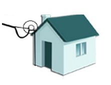

En la fachada de la vivienda
En la fachada se instala una argolla redonda, ésta sostiene el tensor. Máximo 2 tensores por argolla.
En la fachada se elabora un bucle de 10cm x 10cm, separado del muro, para crear un punto de goteo y evitar humedades.
Si es necesario, se grapa el cable coaxial RG-6 en la fachada del predio, con grapas redondas de 6mm, cada 40 a 60cm
